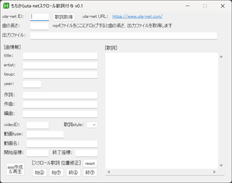

このツールは Music Video などのmp4動画に、スクロール歌詞を付けるものです。
歌詞は uta-net (https://www.uta-net.com/)から取得します。

MochiutaSC.zipを解凍してできたフォルダ内の、MochiutaSC.exeを起動します。
初回起動時のみ、MPC-BE mpc-be64.exeのパスを聞かれます。
起動したら、uta-net (https://www.uta-net.com/)でお目当ての曲を探します。
みつけたら、そのURLにある曲のID を uta-net ID の所に入力してください。
[歌詞取得] を押すと歌詞を取得し、曲情報と歌詞を表示します。
続けて、ダウンロードしたmp4ファイルを ドロップ してください。
すると 曲の長さ 、出力ファイル (assファイル)が入力されます。
修正するところがあれば適宜修正してください。
曲の長さ , 出力ファイル , title , artist , [歌詞] だけです。入力が済んだら、 [ass作成] を押します。
するとassファイルが作成され、MPC-BEが起動しスクロール歌詞が表示されます。
スクロール歌詞の表示位置が画面のなかにおさまらない場合、以下のボタンで表示位置を調整してください。
MPC-BEで曲を再生中にこれらのボタンを押せば把握しやすいと思います。
始㊤ :曲始めの歌詞の初期表示位置(Y座標)を120px上 ↑ にします。始㊦ :曲始めの歌詞の初期表示位置(Y座標)を120px下 ↓ にします。終㊤ :曲終わりの歌詞の最終表示位置(Y座標)を120px上 ↑ にします。終㊦ :曲終わりの歌詞の最終表示位置(Y座標)を120px下 ↓ にします。reset :初期位置に戻します。初期位置は曲始めが480px、曲終わりが200pxですかんたん！
あとはmp4とassをセットでもちからOFFに持ち込むなり、自宅カラオケするなりなんなり有効活用ください。
まずはやってみてください。バグレポート待っています！
歌詞表示内容をカスタマイズしたい人は以下参照のこと。
uta-net ID：
uta-netの曲番号、urlの /song/のあとの数字を入力してください。
URL https://www.uta-net.com/song/100001/ ⇒ 100001
曲の長さ：
mp4の曲の長さ(秒)、小数点以下は読み捨てます。
mp4ファイルをドロップすると、その動画の長さを取得します。
出力ファイル：
出力するassのファイルパス。
mp4ファイルをドロップすると、同じフォルダにassファイルを作成します。
[曲情報]
uta-netで取得した楽曲の情報。
これらは楽曲開始後に画面左上に30秒間表示されます。
title：曲のタイトル。必須項目artist：アーティスト名。必須項目tieup：タイアップ。uta-netにはタイアップ情報が含まれていないことがありますので、適宜補完ください。year：リリース年作詞：楽曲の作詞者名作曲：楽曲の作曲者名編曲：楽曲の編曲者名[動画情報]
uta-netからは取得されません。必要に応じてmp4ファイルの情報を入力してください。
videoID：youtubeの動画ID。urlの watch?v= に続く英数文字、 & の前までを入力してください。歌詞style：表示歌詞の色、フォントを選択できます。デフォルトは1です。
動画type：同一楽曲で複数の動画がある場合、これを識別するためのものです。動画名：youtubeなど動画サイトでのタイトルを記入してください。
開始座標：終了座標：[歌詞]
歌詞エリアです。適宜改行や空行で表示内容を調整ください。
[ass作成＆再生]
ボタン押下でassの作成とMPC-BEでの楽曲再生を行います。
出力が正しいかどうか確認してください。
[スクロール歌詞 位置修正]
始㊤：開始時のY座標を120ピクセル上げる（減らす）始㊦：開始時のY座標を120ピクセル下げる（増やす）終㊤：終了時のY座標を120ピクセル上げる(減らす)終㊦：終了時のY座標を120ピクセル下げる(増やす)reset:初期位置に戻します。開始座標：、終了座標： に値が設定されていない場合、デフォルトの値を使用します。以上